Біноміальний закон розподілу
Важливим типом
випробувань є такий, що містить тільки два наслідки. Наприклад, випробування з киданням монети, мають два можливих наслідки: 1) появу "герба" або 2)
появу "цифри".
Взагалі, незалежні повторні
випробування з двома наслідками називають випробуваннями Бернуллі або
біноміальними випробуваннями.
Як правило, один із наслідків
біноміального випробування вважають успіхом, інший - невдачею.
Наприклад, в експерименті з монетою, появу
"герба" вважають успіхом, а появу "цифри" - невдачею.
Послідовність випадкових випробувань
Бернуллі називають біноміальним експериментом (схемою Бернуллі).
Біноміальному експерименту
характерні наступні особливості:
1.
Число спроб в експерименті
- фіксоване.
2.
В експерименті можливі тільки два наслідки: успіх та невдача.
3.
Ймовірність успіху в кожній спробі
постійна.
4.
Спроби експерименту є незалежними повторними випробуваннями.
В біноміальному експерименті прийнято позначати
ймовірність успіху - р, а
ймовірність невдачі - ц. Зрозуміло,
що "успіх і "невдача" - дві протилежні події і тому
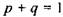
(14) або
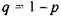
(15)
В біноміальному експерименті, при
якому ймовірність успіху в будь-якій спробі постійна і дорівнює р, ймовірність появи т успіхів
у п незалежних випробуваннях
визначається як
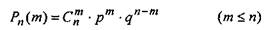
(16)
 (17)
(17)
Нехай X буде випадковою величиною, що
визначає кількість успіхів в біноміальному
експерименті (таку випадкову величину вважають
біноміальною випадковою величиною). Тоді ймовірність появи рівно т подій в п незалежних випробуваннях
визначається як
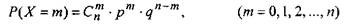
(18)
Розподіл
ймовірностей біноміальної випадкової величини називають
біноміальним законом розподілу.
Приклад 3. Гральний кубик кидається 5 разів. Поява 1 або 6 вважається
за успіх, всі інші варіанти - за невдачу.
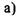
Визначити ймовірність появи у цьому експерименті рівно 0,
1, 2, 3, 4 та 5 успіхів
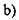
Використовуючи результати пункту
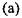
побудувати біноміальний розподіл експерименту
 Яка ймовірність появи 0 або 1 успіху у цьому експерименті?
Яка ймовірність появи 0 або 1 успіху у цьому експерименті?
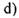
Яка ймовірність появи хоча б одного успіху у
даному
експерименті?
Розв'язання.
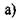
Це -
біноміальний експеримент. Нехай X буде
біноміальною випадковою величиною,
що приймає кожне
із значень 0, 1,
2, 3, 4 і 5 відповідно кількості успіхів 0, 1,2,
З, 4, 5 при п'яти спробах. Гральний
кубик - стандартний,
тому ймовірність появи 2 або 6 в будь-якій спробі
постійна
і дорівнює
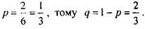
Нарешті,
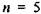
, тому
що маємо тільки п'ять спроб
(кидань кубика) в даному експерименті. Згідно з формулою (18)
знаходимо відповідні ймовірності.
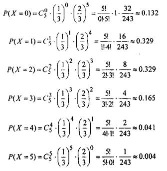
 Враховуючи одержані результати, побудуємо закон
біноміального розподілу даного експерименту (див. Табл.2).
Враховуючи одержані результати, побудуємо закон
біноміального розподілу даного експерименту (див. Табл.2).
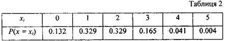
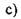
Знаходимо, що ймовірність появи 0 або 1 успіху в експерименті,
дорівнює
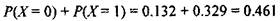
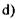
Ймовірність одержання хоча б
одного успіху в експерименті дорівнює
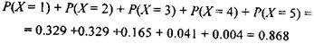
Наступні формули, які приводяться
без доведення, будуть корисні при розв'язанні
проблем, пов'язаних з біноміальним експериментом.
Нехай
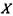
-
біноміальна розподілена випадкова величина, тоді у випадку п незалежних повторних випробувань, в кожному з яких деяка подія з'являється з ймовірністю
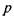
(ймовірність
успіху) та з ймовірністю невдачі
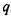
,
математичне сподівання, дисперсія та середнє
квадратичне відхилення випадкової величини
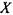
визначають за формулами:
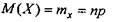
(19)
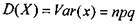
(20)
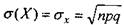
(21)
Приклад 4.
Використовуючи умову прикладу 3 обчислити
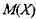
,
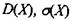
(двома способами).
Розв'язання, а) Згідно формул (19), (20), (21), при
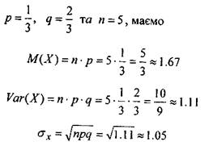
d) Використовуючи формулу (6) і дані Табл. 2, одержимо
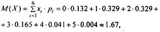
значення
якого добре узгоджується з результатом, одержаним у пункті (а).
Згідно формули (8),
знаходимо
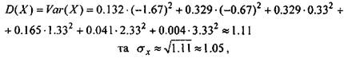
значення яких також узгоджуються з результатами, одержаними раніше.